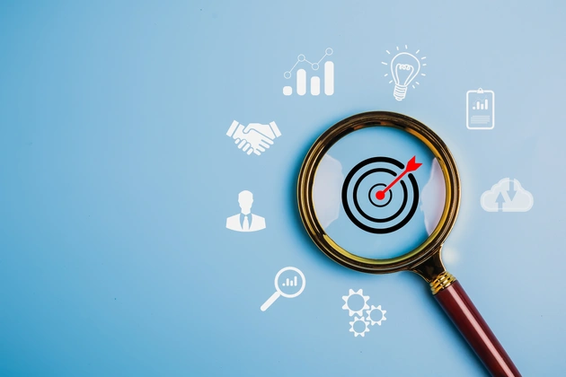

What should I do if I can’t focus?
If you’re having trouble focusing these tips might help:
1. Environmental Adjustments
Remove distractions. Clear up desk clutter, switch off notifications, and only listen to music if it helps you focus.
Notice when you lose attention. Identifying a pattern might help you resolve it, and it might prompt you to concentrate better.
2.Medications
Review your medications. Some drugs and supplements can affect your thinking.

3. Time Management Techniques
Practice time blocking. Make a plan to work for one hour then rest or stretch for 5 minutes, for example. Put “busy” on your calendar so people know when is a suitable time to approach you.
4. Healthy Diet
Eat fruit rather than sugary snacks. Sugar can cause your blood glucose levels to spike and dip, making you feel less energetic after a while.
Keep your brain active. Do puzzles or other activities that keep you thinking actively.
5.Mental Preparation & Habits
Practice mindfulness meditation. This can help train your thoughts and bring them back to center.
Check the side effects of medications. A number of drugs can cause sleepiness or brain fog.
6. Physical Health
Look after your body: Exercise and a varied diet that is rich in essential nutrients can boost your physical wellbeing and may help enhance your mental health.
7. Make To Do List
Makes lists and set achievable goals. Written lists, plans, and goals can help you prioritize and remember the tasks you need to do without them cluttering your mind.